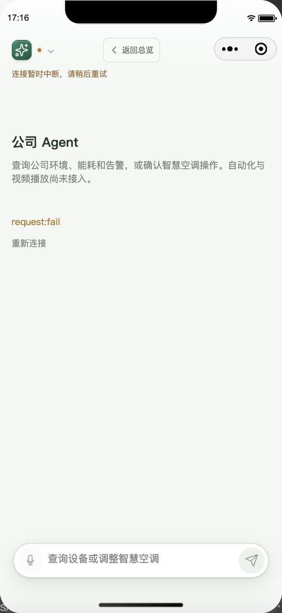
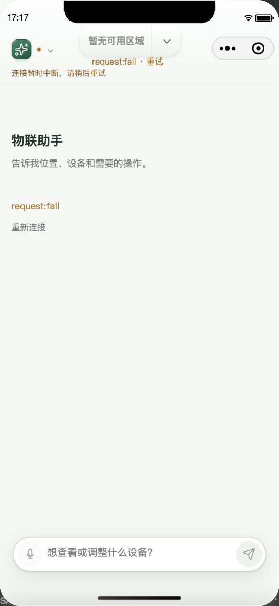
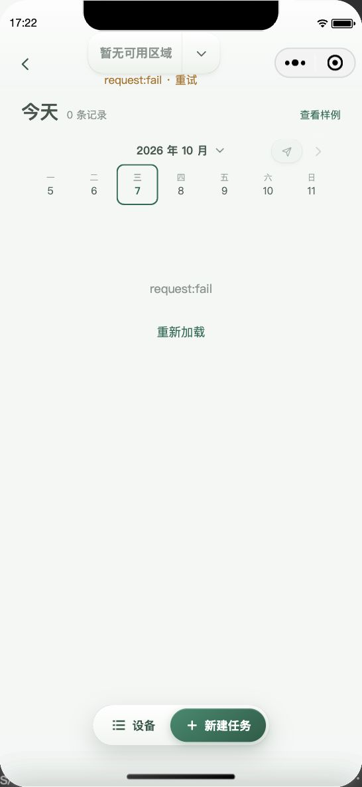
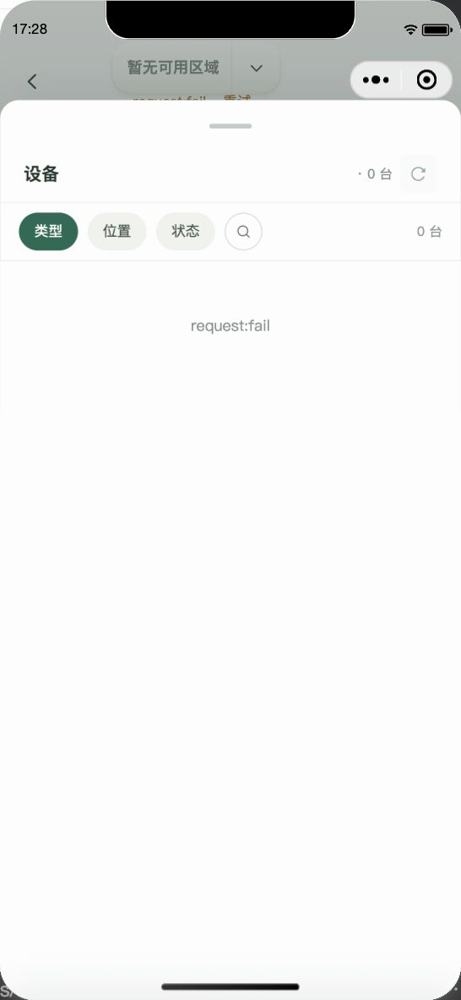
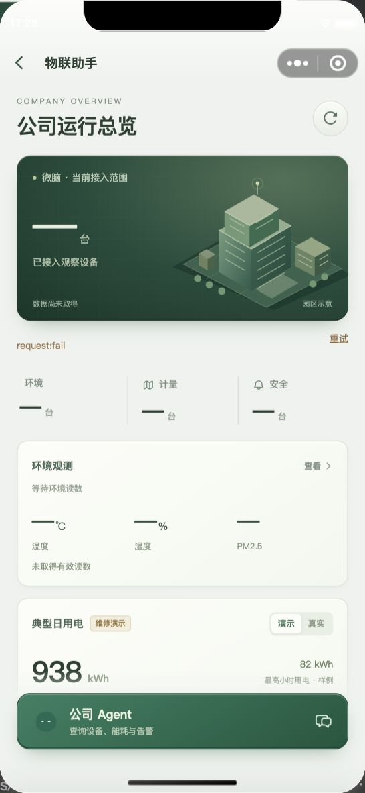

导航检查与设计对照
检查页面属于哪里、每个入口如何前进，以及返回、关闭、切换和手势如何配合。生产源码保持不变。这里的候选线框用于说明预期体验，尚未定案。
当前页面归属
- 公司 Agent 页面
- 会话菜单与清除确认
- 概览 / 草案 → 设备与参数抽屉
- 观察卡、编辑与输入模式
- 办公室 Agent 页面
- 同类会话、草案和输入层
- 区域选择 临时层
- 区域工作台 页面
- 日期与日历
- 任务详情 独立抽屉
- 设备列表 → 设备 → 任务 抽屉内层级
- 设备观察 → 视频容器 / H5
- 环境 / 计量 / 安全台账 独立抽屉
Company 也可从 Office 或告警直达进入。树决定默认归属，进入历史决定正常返回。上一步与“去总览”不能混为一谈。
检查中的主要断点
Office 返回藏在菜单；独立任务、观察、直接参数抽屉没有显式退出按钮。
Company 把“返回总览”小按钮摆在中间；区域值占据页面标题位置。
设备抽屉打开后，页面返回直接退出工作台；已在模拟器复现。
播放跳转触发 onHide，设备浏览栈被清除；参数保存、搜索返回和重访落点也需要明确。
“新建任务”不保证到 Office；from 参数决定的返回文字不保证实际落点。
Company 三个模拟器路由样本为 679 / 1958 / 656ms。不能用换一段动画宣称性能问题解决。
导航职责：当前与候选
以下均为结构示意，不是生产截图，不模拟真实业务操作。点击宽度可检查标题、返回和微信胶囊的空间关系；最终组件与布局仍需评审。
公司 Agent：返回融入导航栏，页面身份常驻
“去总览”若作为指定目的地动作，必须和“返回上一页”区分，不只是换标签。
办公室 Agent：页面名字和区域上下文分开
候选增加一条上下文行；可与单行布局比较，尚未决定额外占用垂直空间。
工作台：先说明“在哪一页”，再说明“哪个区域”
抽屉：返回一层与关闭整个层同时说清楚
显式按钮解决出口发现；系统返回还需独立的微信机制验证，不能只靠这两个图标解决。
| 动作 | 明确含义 | 应保留的上下文 |
|---|---|---|
| 返回 | 撤销一次深入，回真实来处 | 进入前日期、筛选、滚动、草稿 |
| 关闭 | 退出整个临时层 | 关闭不取消任务；浏览恢复政策明确 |
| 切换 | 更换同级视角或当前值 | 各视角必要状态；不制造假的“深入” |
| 放弃 / 取消 | 针对明确对象的操作 | 不由返回、遮罩或关闭隐式提交 |
| 系统返回 | 和当前最上层空间协调 | 微信平台能力与页面栈必须实测 |
卡顿：已经测到什么
| Company 进入样本 | route.duration | firstRender.duration |
|---|---|---|
| 本轮第一次按钮进入 | 679ms | 64ms |
| 再次进入 | 1958ms | 74ms |
| 再次进入 | 656ms | 56ms |
这是微信开发模拟器的原始性能条目，采样少且本地 Runtime 不可用。路由与渲染耗时不能相加，数据不证明真机根因。还需分别测按下反馈、切页、可输入与历史恢复；不要把自动化命令耗时当作页面耗时。查看原始条目
当前微信实际画面
390px 模拟器 · 读取失败态 · 原始截图未改像素。它们用于检查真实导航位置和失败态，不代表成功业务或真机验收。






页面返回与抽屉关闭不是同一行为




这个案例是模拟器页面返回 API 的复现；iOS 边缘手势、Android 返回键、成功数据下三级 pane 仍需真机验证。